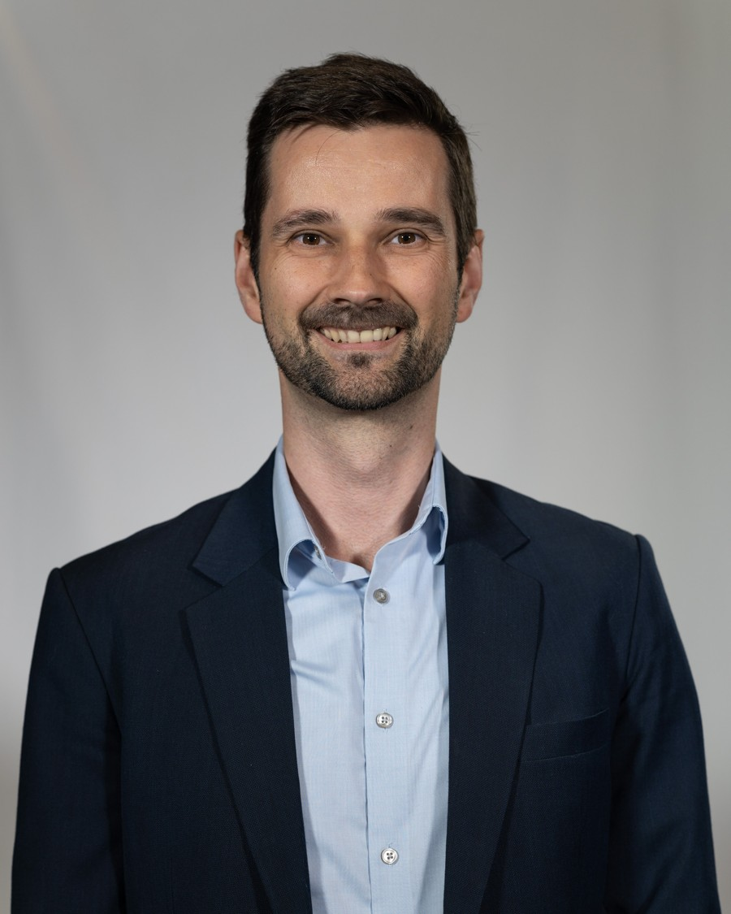

The gap we close
Establishing a credible medical function in neuroscience is demanding: the science moves quickly, advisory boards and publications require experience that early-stage teams rarely hold in-house - and cannot yet justify hiring full-time. ARKH Advisory closes that gap with a senior partner who has led this work inside industry, engaged on a fractional, project, or retained basis and focused specifically on neurology and neuro-diagnostics.
A dedicated focus on neurodegeneration, Alzheimer's disease, Parkinson's and parkinsonian syndromes, MS, rare neurological disorders, and biomarkers (PET, SPECT imaging, fluid biomarkers, immunofluoresence). Engagements begin productive, with minimal or no ramp-up.
Direct experience and established thought-leader relationships across both markets - a single partner for transatlantic medical strategy, working US and EU hours.
Director-level Medical Affairs without the headcount, overhead, or hiring lead time. Scale engagement up or down by stage, month to month.
Evidence, not adjectives
A track record in the peer-reviewed literature on Alzheimer's biomarkers and neuro-imaging - the same scientific rigor brought to every engagement.
Experience spanning GE HealthCare, MedDay Pharmaceuticals, myTomorrows and Syneos Health
How we work together
Choose the model that fits your stage. Fixed scope, senior delivery, remote-first.
Your part-time senior medical lead - ongoing medical strategy, KOL engagement, and advisory-board and publication oversight, with senior judgement on call. A defined number of days per month at a predictable monthly fee.
For companies in active build or scaling up.
For a specific, time-boxed deliverable.
Senior medical input by the day or half-day - expert interviews, advisory-board facilitation, congress coverage, and overflow capacity for in-house teams and agencies.
For one-off or as-needed support.
Not sure which model fits? Book a 30-minute fit call and we'll map it to your stage.
For pharma & established teams
Already have a Medical Affairs function? Bring in senior neuroscience expertise for a defined need - neutral, fast, and confidential. Engaged by project or day rate, with no headcount impact and global time-zone flexibility.
Independent design and expert, neutral facilitation of neurology advisory boards, with a synthesized insights report your team can act on.
Senior medical writing for manuscripts, reviews, consensus statements, and congress abstracts - to submission-ready, ICMJE-aligned.
Curated, tiered KOL maps and engagement plans across US and EU neurology and neuro-diagnostics.
Senior MSL / Medical Advisor bandwidth by the day - to cover peaks, congresses, vacancies, or specialist topics.
Need a neutral specialist for a single project? Book a 30-minute call.
Therapeutic focus
If your asset sits in neurology or neuro-diagnostics, this is the consultancy built for it.
A clear scope
How engagements run
We confirm scope, fit, and the right engagement model. No pitch - simply whether ARKH Advisory can help.
Clear scope, deliverables, timeline, and fixed fee. You approve before any work begins.
Remote-first, async-first, and on time. You receive the work, not the overhead.

About
A Medical Affairs leader with a PhD in life and health sciences and 9+ years in pharma and biotech, focused on neurodegeneration and diagnostic biomarkers. I have built KOL networks across the US and EU, designed and run advisory boards end-to-end, supported a diagnostic imaging label update, delivered hundreds of scientific presentations, and published with leading experts in journals including Alzheimer's & Dementia.
I founded ARKH Advisory to bring that senior, specialist experience to the companies that benefit most - biotech and diagnostics teams that need the medical thinking before they can build the department, and pharma teams that need neutral specialist or overflow capacity. I work remotely, transatlantically, and on terms that fit your stage.
Let's talk
A 30-minute fit call, no pitch - simply whether ARKH Advisory can help, and how.
contact@arkhadvisory.com · Saint-Germain-en-Laye, France